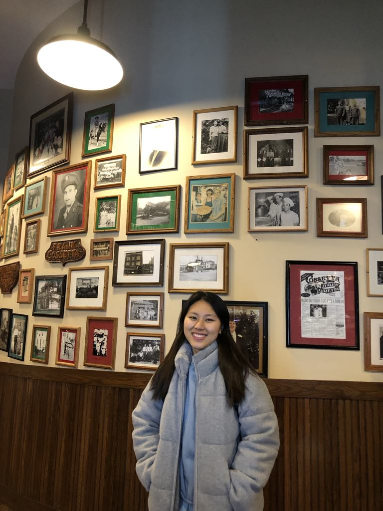

Welcome to my portfolio!
Explore my projects and get to know more about my work in web development.
About Me
Explore my projects and get to know more about my work in web development.
I am an international student at Saint Paul College, pursuing a major in Computer Programming. This semester, I am taking courses including Computer Networking 1 - Client, Web Fundamentals HTML, and Computer Science and Information Systems. Next semester, I plan to expand my knowledge by enrolling in Client-Side Programming and Introduction to Computing and Programming Concepts. In addition to my academic coursework, I am also dedicated to learning Python through online classes from external platforms. My professional background includes experience as a computer applications instructor, where I taught various software and technology skills. Furthermore, I have worked as a Monitoring and Evaluation Assistant at a healthcare organization in Kachin State, Myanmar. These experiences have strengthened my technical abilities, problem-solving skills, and understanding of data management. I am passionate about applying my knowledge to build practical solutions and am committed to growing as a programmer in the ever-evolving field of technology.

Portfolio Pages
Designed using HTML and CSS, with enhancements from Bootstrap and Font Awesome. Includes the Animal Web Page and Puppies Page, showcasing creative layouts and responsive design.
Resume Page
A professional resume page presenting my background as a student, instructor, and data entry specialist. Styled with Bootstrap, the page includes sections such as Objective, Skills, Experience, and Education, plus links to my LinkedIn, GitHub, and email.
Flappy Bird Game
A browser-based game built with JavaScript during the W3Schools tutorial. I customized it by enlarging the game area, adding CSS styles, and including a background image. Use the FLAP WINGS button to stay in the air. How long can you fly?